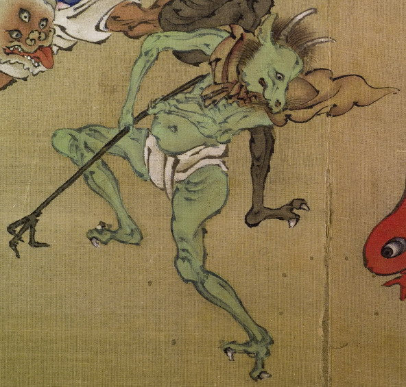

緑色の山羊のような頭部を持つ化物。頭に2本長い角を生やして、獣のような耳を立てている。茶色い肩布と白い腰巻を身につけて、先が3つに分かれて爪のように曲がっている棒状のものを両手で持っている。
著作者：木舜／出典：親書誌：U426_nichibunken_0155：東都画家妖怪画帖；トウトガカヨウカイガチョウ／日付：2010／資源識別子：U426_nichibunken_0155_0001_0003
Copyright (c)2010- International Research Center for Japanese Studies, Kyoto, Japan. All rights reserved.